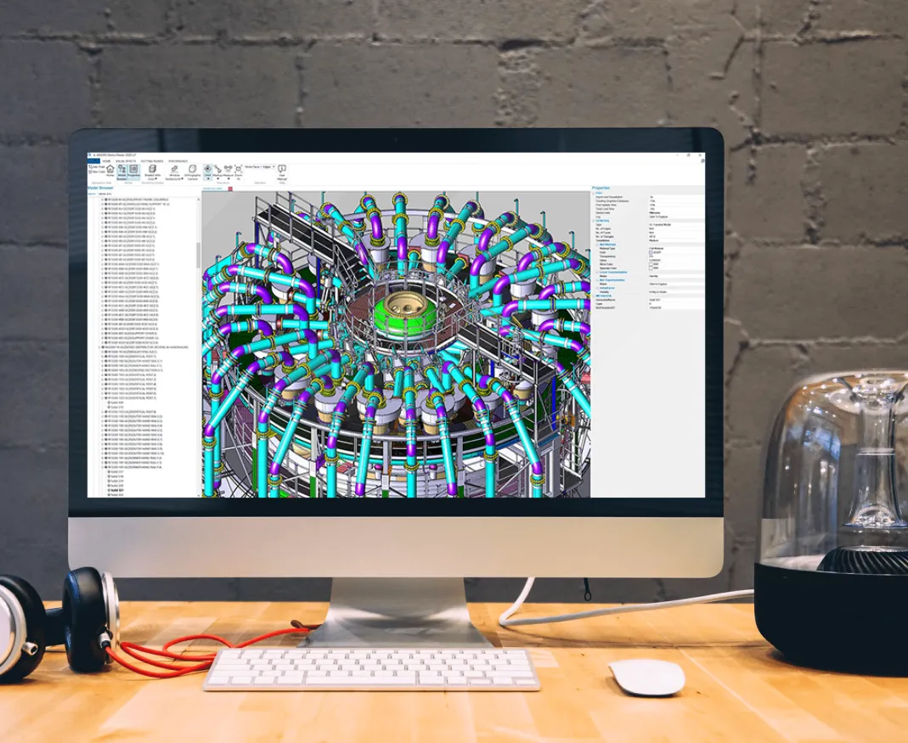

A 3D CAD-native machine learning framework by Tech Soft 3D. It provides everything needed for 3D CAD and AI workflows in a single toolkit — from loading 30+ 3D CAD formats and building datasets, to training models and running inference.
Built on HOOPS Exchange — natively supports 30+ formats including STEP, SolidWorks, CATIA, and NX. No additional parsers required.
Extract geometry and attribute data from 3D CAD files and automatically generate ML training datasets via scripts.
Pre-trained models for manufacturing feature recognition and shape similarity search. Custom model training and inference via Python API.
Integrated with HOOPS Visualize for Web — inference results are displayed as real-time color overlays in the 3D viewer.

3D CAD Intelligence Platform
3D CAD Viewer · B-Rep Analysis · Manufacturing Feature Recognition · Similarity Search
WebAPI (FastAPI) + MCP Server (Claude Desktop)
Interactive 3D visualization in the browser for 30+ 3D CAD formats including STEP, SolidWorks, CATIA, and NX. Launch via file upload or shared path.
Generate face adjacency graphs from B-Rep models and extract face/edge attributes (type, area, length, dihedral angle, etc.). Graph visualization (PNG).
Recognize machining features (holes, slots, pockets, and 24 other types) in 3D CAD files using a trained ML inference model. Results visualized with color-coding in the viewer.
Convert 3D CAD shapes into feature vectors using HOOPS Embeddings, then perform fast similarity search with a FAISS index. Returns top-K results with similarity scores.
| Method | Endpoint | Description |
|---|---|---|
| POST | /CAD/viewer | Launch 3D CAD viewer (file upload) |
| DELETE | /CAD/viewer | Terminate 3D CAD viewer |
| Method | Endpoint | Description |
|---|---|---|
| POST | /BRep/adjacency-graph | Generate B-Rep face adjacency graph |
| POST | /BRep/attributes | Extract B-Rep face & edge attributes |
| Method | Endpoint | Description |
|---|---|---|
| GET | /MFR/files/search | Search files by machining feature name |
| GET | /MFR/files/{id}/thumbnail | Thumbnail PNG for a file |
| GET | /MFR/labels/description | List of MFR labels and descriptions |
| GET | /MFR/dataset/table-of-contents | Dataset overview |
| POST | /MFR/inference | Run MFR inference + launch viewer |
| POST | /MFR/viewer/colorize | Colorize viewer with inference results |
| Method | Endpoint | Description |
|---|---|---|
| POST | /similarity/search | Shape similarity search |
| Tool | Description |
|---|---|
open_CAD_viewer | Open a 3D CAD file in the 3D viewer |
terminate_CAD_viewer | Close the 3D CAD viewer |
| Tool | Description |
|---|---|
get_brep_adjacency_graph | Generate B-Rep face adjacency graph |
get_brep_attributes | Extract B-Rep face & edge attributes |
| Tool | Description |
|---|---|
get_MFR_table_of_contents | Get MFR dataset overview |
get_MFR_labels_description | List MFR label IDs, names, and descriptions |
search_MFR_files | Search 3D CAD files by machining feature name |
get_MFR_file_thumbnail | Get thumbnail PNG for a file ID |
run_MFR_inference | Run MFR inference and launch viewer |
colorize_MFR_viewer | Colorize viewer with inference results |
| Tool | Description |
|---|---|
search_similar_shapes | Shape similarity search |
3D CAD intelligence API powered by FastAPI. Instantly testable via Swagger UI.
Claude Desktop performs 3D CAD analysis in natural language via MCP.
Deep 3D CAD data analysis: machining feature recognition, face adjacency graphs, and attribute extraction.
High-accuracy shape similarity search with HOOPS Embeddings + FAISS. Demonstrated scores of 0.99+.